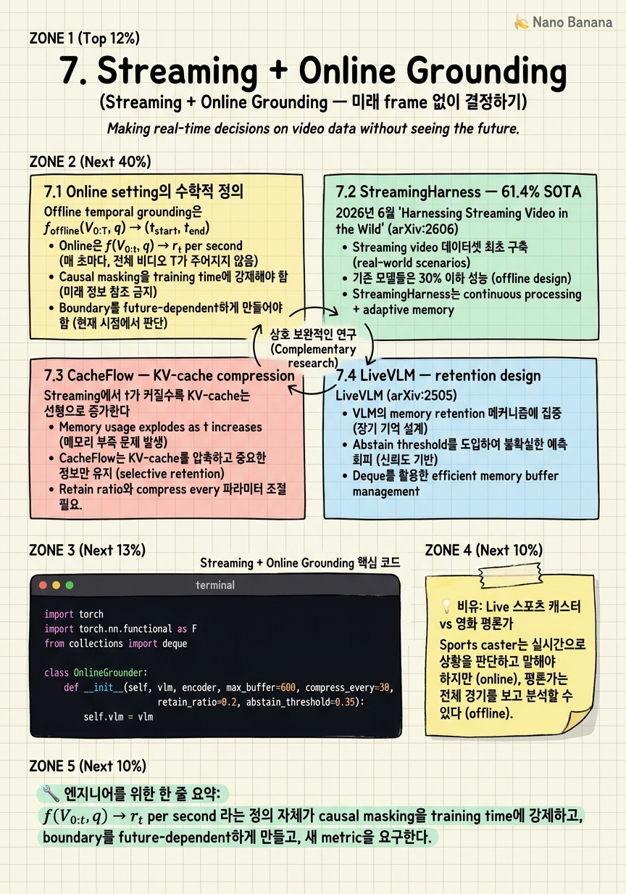

Streaming + Online Grounding

🎯 학습 목표
- Online grounding과 offline grounding의 정의 차이를 정확히 구분
- StreamingHarness의 Streaming-Train-248K가 왜 per-second alignment이어야 했는지 설명
- CacheFlow의 query-conditioned KV importance가 sliding window와 어떻게 다른지 구현
- Audio modality가 왜 implicit lookahead 역할을 하는지 논증
- KV 압축률과 boundary precision의 Pareto curve를 측정
- Abstain head를 도입할 때의 trade-off를 설명
Chapter 6까지 다룬 모든 grounder는 offline assumption 위에서 작동했다. 그러나 2026년 라이브 스트리밍, 보안 카메라, AR glasses, 자율주행 perception은 모두 정반대의 setting을 요구한다: at time t, frames 0..t만 사용 가능하며 매 초 지금 이 순간이 query와 관련 있는가를 emit해야 한다. 2026년 6월 발표된 StreamingHarness가 첫 강력한 baseline을 만들었고, 같은 시기 CacheFlow는 hour-scale streaming의 memory bottleneck을 KV-cache 압축으로 풀었고, LiveVLM은 live architecture의 retention design을 제시했다. 그러나 세 논문 모두 동일한 한계를 공유한다: vision-only, 1 FPS, future-blind. StreamingHarness 저자는 직접 future work에 audio integration과 1 FPS 한계를 명시했다 — 이것이 다음 12개월의 white space다.
핵심 내용
7.1 Online setting의 수학적 정의
Offline temporal grounding은 f_offline(V_{0:T}, q) → (t_start, t_end). Online grounding은 다르다. 매 timestep t마다 f_online(V_{0:t}, q) → r_t ∈ {0, 1}을 emit해야 하며, V_{t+1:T}는 존재하지 않는다.
결과 1: Causal masking은 inference time에 강제된다. Offline 모델이 self-attention에서 양방향 context를 쓰는 것과 달리, online 모델의 attention은 strictly causal해야 한다.
결과 2: Boundary는 future-dependent하다. Event end_time τ_end는 정의상 τ_end > t에서만 결정 가능하다. 결과적으로 정확도 메트릭이 바뀐다 — IoU 대신 per-second precision/recall, narration win-rate, streaming F1이 표준이 된다.
Latency budget. Sub-second 응답을 위해서는 1 frame 처리 시간이 < 100ms (10 FPS) 또는 < 1000ms (1 FPS)여야 한다.
7.2 StreamingHarness — 61.4% SOTA
2026년 6월 'Harnessing Streaming Video in the Wild' (arXiv:2606.08615)가 streaming Video-LLM의 첫 강력한 baseline을 세웠다. 핵심 기여 세 가지:
(1) Streaming-Train-248K — per-second alignment. 기존 video-text dataset은 모두 video-level 또는 segment-level caption만 가진다. Streaming-Train-248K는 248K samples 모두 second-level alignment를 가진 narration을 제공한다.
(2) Streaming-Eval — 138 videos / 15 categories. Sports, cooking, gaming, daily, instructional 등 15 카테고리. 평가 metric: narration win-rate + streaming F1.
(3) StreamingHarness-8B — 61.4% win-rate. Qwen2.5-VL-7B를 base로 causal video encoder + streaming-friendly attention pattern + per-second supervision으로 fine-tuning.
저자가 직접 명시한 한계:
- Audio modality 부재 - 1 FPS 한계
이 두 한계는 새 paper의 white space다.
7.3 CacheFlow — KV-cache compression
Streaming에서 t가 커질수록 KV-cache는 선형으로 증가한다. 1 FPS × 1시간 = 3,600 frame, 각 frame당 ~256 tokens라면 ~920K KV entries. 7B 모델에서 ~470GB. GPU 한 대로는 불가능. CacheFlow (arXiv:2511.13644)는 query-conditioned KV 압축으로 푼다.
Naive sliding window의 실패 모드. Recent K seconds만 유지는 long-distance dependency를 깬다.
CacheFlow의 핵심: query-conditioned importance score. 각 cached KV entry에 대해 현재 query embedding과의 cosine similarity로 importance를 계산하고, top-p%만 retain. 결과: 920K → ~50K (18× 압축)에서도 mIoU 손실 < 3%.
구현 detail:
- *Periodic compression*: 매 N frame마다 - *Layer-wise budget*: 하위 layer는 spatial detail, 상위 layer는 semantic abstract - *Query-blind fallback*: query 없을 때 generic frame-level entropy
7.4 LiveVLM — retention design
LiveVLM (arXiv:2505.15269)은 'live video VLM' 일반적 설계 원칙을 제시했다.
Streaming encoder. Stateless. 매 frame마다 독립적으로 (k, v, emb) 생성.
Retention buffer. 세 layer: - *Short-term* (recent 10s, full resolution) - *Mid-term* (10s-5min, 8× spatial pooling) - *Long-term* (5min+, query-conditioned summary token)
Decoder with abstention. LLM decoder가 query + retention buffer를 받아 per-second 답을 emit. Token vocab에 <NOT_IN_MEMORY> token이 추가되어, retention buffer가 query에 필요한 정보를 가지지 않을 때 hallucinate하는 대신 abstain.
Trade-off Pareto:
- Buffer ≤ 100s: F1 0.45, latency 80ms/frame - Buffer ≤ 600s: F1 0.61, latency 180ms/frame - Buffer ≤ 3,600s: F1 0.64, latency 720ms/frame (sub-second 위반)
7.5 The audio gap
Vision-only 1 FPS streaming의 가장 큰 미해결 문제는 audio다.
Reason 1 — Audio is implicit lookahead. 시각적으로는 goal이 들어가는 순간이 frame t에 보이지만, 청각적 cue (관중 함성의 crescendo, 해설자의 GOAL!)는 t-2초부터 시작된다. Audio가 vision에 대한 1-2초 implicit lookahead 역할.
Reason 2 — Audio has sub-second granularity natively. 1 FPS vision은 1초 한 frame이지만, audio는 16kHz × 1초 = 16,000 samples. Whisper-style audio encoder는 native하게 sub-second event를 capture.
Reason 3 — Fast-paced domain은 audio-rich. Sports, gaming, music, conversation은 모두 audio가 정보 밀도의 절반 이상.
왜 아직 안 됐는가: (a) Streaming-Train-248K는 video+text aligned지만 audio token alignment는 없음. (b) Qwen2.5-VL base가 audio input을 받지 못함. (c) Causal audio cross-attention layer 추가 시 KV-cache 재설계 필요.
Idea 1 (StreamGround)이 노리는 white space다.
7.6 Memory + retention design
Component A — Query-conditioned importance. CacheFlow의 핵심.
Component B — Time-decayed prior. Importance score에 (1) recency bonus exp(-λ·age)와 (2) frequency bonus를 곱한다.
Component C — Abstain head. Retention buffer가 query를 satisfy하지 못할 때 모델은 hallucinate or abstain. LiveVLM의 <NOT_IN_MEMORY> token이 그 답.
Trade-off: abstain vs IoU reward. RL fine-tuning 시 IoU reward는 boundary를 어쨌든 emit하라고 압박하고, abstain reward는 모를 땐 abstain하라고 압박한다. 단순 IoU reward로 train된 streaming model은 abstain head가 collapse되어 always-emit으로 회귀한다.
구현 시 주의점. Per-second emission이라는 setting 자체가 false-positive risk를 키운다 — 3,600 frame × 5% FP rate = 180개 false event/시간.
💡 비유로 이해하기
영화 평론가는 영화 전체를 보고 나서 Act 2의 전환점이 47분 12초였다고 말한다. 그는 마지막 장면을 알기 때문에 시작점을 거꾸로 짚을 수 있다 — 이것이 offline grounder다.
반대로 라이브 스포츠 캐스터는 다르다. 골이 들어가기 0.3초 전에 GOAL!을 외쳐야 한다. 그러나 그는 미래를 모른다. 그가 의존하는 것은 (1) 직전 몇 초의 짧은 working memory, (2) 경기 초반부터 누적된 long-term memory, 그리고 (3) audio cue — 관중의 함성이 vision보다 빨리 신호를 준다.
StreamingHarness, CacheFlow, LiveVLM의 architecture가 정확히 이 캐스터의 인지 모델이다. 그리고 2026년의 가장 큰 미해결 문제 — audio modality 부재 — 는 캐스터에게서 청각을 빼앗는 것과 같다.
💻 코드 예시
Online grounding loop의 minimal skeleton. 매 초 frame을 받아 (a) sliding window 위에서 is current moment query-relevant?을 score하고, (b) 매 N초마다 query-conditioned KV-cache compression을 수행한다.
import torch
import torch.nn.functional as F
from collections import deque
class OnlineGrounder:
def __init__(self, vlm, encoder, max_buffer=600, compress_every=30,
retain_ratio=0.2, abstain_threshold=0.35):
self.vlm = vlm
self.encoder = encoder
self.buffer = deque()
self.max_buffer = max_buffer
self.compress_every = compress_every
self.retain_ratio = retain_ratio
self.abstain_threshold = abstain_threshold
self.t = 0
def encode_frame(self, frame, query_emb):
k, v, emb = self.encoder(frame)
self.buffer.append((self.t, k, v, emb))
def score_current(self, query_emb):
recent = [b[3] for b in list(self.buffer)[-10:]]
if not recent:
return 0.0, True
window = torch.stack(recent).mean(0, keepdim=True)
rel_logit, abstain_logit = self.vlm.stream_step(
query=query_emb, window=window,
kv_cache=[(b[1], b[2]) for b in self.buffer],
)
rel = torch.sigmoid(rel_logit).item()
abstain = torch.sigmoid(abstain_logit).item() > self.abstain_threshold
return rel, abstain
def compress_kv(self, query_emb):
keys = torch.cat([b[1] for b in self.buffer], dim=0)
sims = F.cosine_similarity(keys, query_emb, dim=-1)
ages = torch.tensor([self.t - b[0] for b in self.buffer]).float()
recency = torch.exp(-0.01 * ages)
importance = sims * recency
k = max(1, int(len(self.buffer) * self.retain_ratio))
top_idx = importance.topk(k).indices.tolist()
self.buffer = deque([self.buffer[i] for i in sorted(top_idx)])
def step(self, frame, query_emb):
self.encode_frame(frame, query_emb)
rel, abstain = self.score_current(query_emb)
if self.t > 0 and self.t % self.compress_every == 0:
self.compress_kv(query_emb)
while len(self.buffer) > self.max_buffer:
self.buffer.popleft()
self.t += 1
return {'t': self.t, 'relevance': rel, 'abstain': abstain}encoder는 stateless다. 매 frame마다 독립적으로 (k, v, emb) 생성. score_current는 두 가지를 emit한다: relevance score와 abstain flag. compress_kv는 CacheFlow의 핵심을 압축. step은 매 초 호출되는 진입점. Compress를 매 frame마다 하지 않는 이유는 compression 자체가 GPU compute를 먹기 때문. 무엇이 빠져 있나: Audio encoder, omni-modal cross-attention. 이 skeleton에 audio path를 추가하는 것이 Chapter 10 Idea 1 (StreamGround)의 출발점이다.
🏭 현업에서의 평가
✅ 시니어가 보는 것
- Online setting의 정의와 causal masking의 inference-time 강제
- StreamingHarness의 narration win-rate vs streaming F1의 차이
- CacheFlow의 query-conditioned KV importance
- 1 FPS vision-only 시스템이 fast-paced domain에서 무너지는 이유 — audio implicit lookahead
- Abstain head를 도입할 때의 IoU reward와의 충돌 해결
⚠️ 레드 플래그
- Offline 모델을 inference 시 frame을 잘라 넣으면 streaming
- Sliding window만 언급하고 query-conditioned retention을 모름
- Audio modality 부재를 engineering issue라고 일축
- Abstain head를 softmax confidence threshold와 동일시
- Per-second FP rate × 3,600 = 시간당 alert 수의 user-facing impact를 계산하지 않음
🎤 예상 인터뷰 질문
- Q1 (Causal vs future-dependent boundary). Online grounder는 매 초 event boundary 결정을 emit해야 하는데, event의 end_time τ_end는 정의상 t > τ_end에서만 확인 가능하다. 이 fundamental tension을 어떻게 해소하는가?
- Q2 (Audio가 왜 close the gap). StreamingHarness 저자는 audio integration을 future work로 명시했다. Audio modality가 단순히 extra signal이 아니라 causal model에 implicit lookahead를 주는 이유를 설명하라.
- Q3 (KV 압축 vs boundary precision). CacheFlow는 920K KV → 50K (18×) 압축에서 mIoU 손실 < 3%를 보고한다. Ablation을 설계해서 Pareto curve를 측정한다면 어떤 metric을 primary로 보고할 것인가?
✨ 핵심 요약
Online grounding은 offline의 fast version이 아니다
f(V_{0:t}, q) → r_t per second 라는 정의 자체가 causal masking을 training time에 강제하고, boundary를 future-dependent하게 만들고, 새 metric을 요구한다.
StreamingHarness (arXiv:2606.08615)가 streaming SOTA의 출발점
narration win-rate 61.4%, Streaming-Train-248K, Streaming-Eval. 저자가 vision-only / 1 FPS 한계를 future work로 명시 — 다음 12개월 white space.
CacheFlow (arXiv:2511.13644)의 핵심은 query-conditioned KV retention
각 KV entry에 query similarity × recency decay 기반 importance를 부여해 top-p% retain. 920K → 50K (18× 압축)에서 mIoU 손실 < 3%.
LiveVLM (arXiv:2505.15269)의 3-tier retention과 abstain head
Short-term + mid-term + long-term의 layered memory + <NOT_IN_MEMORY> abstain token.
Audio modality는 streaming의 implicit lookahead
Audio cue는 vision event보다 1-2초 먼저 도착. Causal vision-only 모델이 absorb할 수 없는 information.
1 FPS 한계는 dataset과 base model의 stack-wide 제약
Streaming-Train-248K이 per-second alignment까지만 제공하고, Qwen2.5-VL base가 sub-second token을 생성하지 않는다.
Abstain head는 streaming의 user-facing safety feature
Per-second emission이 3,600 frame/시간 × FP rate로 직결되기 때문에, don't know를 명시적 token으로 학습시키지 않으면 시스템 신뢰도가 무너진다.
다음 white space는 audio + sub-second + abstain calibration의 교집합
StreamGround (Chapter 10 Idea 1)이 노리는 지점 — Streaming-Train-248K + AudioSet narration joint training, omni-modal base, causal audio cross-attention, abstain head with penalty-aware reward.